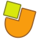

[[lang]]
[[heading]]
[[prj.title]]
[[prj.school]]
| [[labels.languages]]: | [[fields.languages]] |
| [[labels.subjects]]: | [[fields.areas]] |
| [[labels.levels]]: | [[fields.levels]] |
| [[labels.date]]: | [[prj.date]] |
| [[labels.license]]: |
[[labels.share]] "[[prj.title]]"
Projecte JClic
El JClic és un projecte de programari lliure de la Xarxa Telemàtica Educativa de Catalunya (XTEC) que permet crear diversos tipus d’activitats interactives com ara associacions, puzles, activitats de text, mots encreuats o sopes de lletres, a partir d’elements de text, gràfics i multimèdia.
El programa compta amb una eina d'autor per crear les activitats, un reproductor que permet executar-les i un sistema d'informes que emmagatzema els resultats obtinguts pels alumnes. Tots aquests components, així com diverses guies i tutorials per aprendre a crear les activitats, es troben disponibles a la zonaClic.
El JClic és una aplicació Java que funciona en sistemes Linux, Windows i Mac OS. El codi font i la documentació tècnica de l'aplicació es troben disponibles a GitHub.
jclic.js
Aquest és un projecte encara en fase de desenvolupament que pretén crear un nou reproductor d’activitats JClic totalment basat en HTML5 (HTML + JavaScript + CSS3). L’objectiu és poder veure les activitats JClic en qualsevol navegador web modern (Firefox, Chrome, Safari…) sense cap connector especial. Això permetrà utilitzar el JClic en sistemes que no suporten Java, com ara Android, iOS, o ChromeOS, així com en els navegadors Google Chrome i MS Edge.
El codi font i la documentació del projecte jclic.js es troben disponibles a GitHub. El projecte està obert a les aportacions de tots aquells que vulguin participar en el seu desenvolupament.
Està previst que el mòdul JClic Author permeti aviat l’exportació directa de les activitats a pàgines HTML amb jclic.js.
Biblioteca d’activitats JClic
Són molts els docents de diferents països que han utilitzat el JClic per crear materials interactius en diverses llengües i per a múltiples nivells, temes i àrees curriculars. Alguns d’aquests materials s’han anat recollint a la biblioteca de projectes de la zonaClic gràcies a la generositat dels seus autors, que han decidit compartir-los amb llicències Creative Commons permetent així la seva reutilització, traducció i adaptació a escenaris educatius diversos.
JClic-repo
Aquesta pàgina forma part de "jclic-repo", un nou projecte que té com a objectiu facilitar la publicació de col·leccions de projectes JClic en serveis d'allotjament web estàtic. El projecte utilitza la tecnologia de components web Polymer, i totes les seves fonts es troben també disponibles a GitHub.
Aquesta instal·lació de jclic-repo es troba allotjada provisionalment a l'espai Google Drive de la XTEC i conté una bona part dels més de 2.300 recursos de la biblioteca de projectes de la zonaClic. El cercador us permet filtrar els resultats per idioma, nivell educatiu, àrea curricular, títol o autoria. Fent clic damunt la targeta de cada projecte accedireu a una informació més detallada, des d’on podreu engegar les activitats en HTML5, obrir-les en un applet (sempre i quan el sistema suporti Java) o compartir-les a les xarxes socials.
Atenció: us trobeu en un espai provisional destinat principalment a la realització de proves per facilitar el desenvolupament del jclic.js. Alguns tipus d’activitats encara no funcionen correctament en tots els dispositius, i hi ha diverses funcionalitats encara no implementades. Podeu ajudar-nos notificant errors, suggerint millores i proposant possibles solucions als espais de desenvolupament dels projectes JClic, jclic.js i jclic-repo.
Proyecto JClic
JClic es un proyecto de software libre de la Red Telemática Educativa de Cataluña (XTEC) que permite crear diversos tipos de actividades interactivas como asociaciones, puzles, actividades de texto, crucigramas o sopas de letras, a partir de elementos de texto, gráficos y multimedia.
El programa cuenta con una herramienta de autor para crear las actividades, un reproductor que permite ejecutarlas y un sistema de informes que almacena los resultados obtenidos por los alumnos. Todos estos componentes, así como diversas guías y tutoriales para aprender a crear las actividades, se encuentran disponibles en la zonaClic.
JClic es una aplicación Java que funciona en sistemas Linux, Windows y Mac OS. El código fuente y la documentación técnica de la aplicación están disponibles en GitHub.
jclic.js
Es un proyecto todavía en fase de desarrollo que pretende crear un nuevo reproductor de actividades JClic totalmente basado en HTML5 (HTML + JavaScript + CSS3). El objetivo es poder ver las actividades JClic en cualquier navegador web moderno (Firefox, Chrome, Safari…) sin ningún conector especial. Esto permitirá utilizar JClic en sistemas que no soportan Java, como Android, iOS o ChromeOS, así como en los navegadores Google Chrome y MS Edge.
El código fuente y la documentación del proyecto jclic.js están disponibles en GitHub. El proyecto está abierto a las aportaciones de todas las personas que quieran participar en su desarrollo.
Está previsto que el módulo JClic Author permita pronto la exportación directa de las actividades a páginas HTML con jclic.js.
Biblioteca de actividades JClic
Son muchos los docentes de distintos países que han utilizado JClic para crear materiales interactivos en diversas lenguas y para múltiples niveles, temas y áreas curriculares. Algunos de estos materiales se han ido recopilando en la biblioteca de proyectos de la zonaClic gracias a la generosidad de sus autores, que han decidido compartirlos bajo licencias Creative Commons permitiendo así su reutilización, traducción y adaptación a escenarios educativos diversos.
JClic-repo
Esta página forma parte de "jclic-repo", un nuevo proyecto que tiene como objetivo facilitar la publicación de colecciones de proyectos JClic en servicios de alojamiento web estático. El proyecto utiliza la tecnología de componentes web Polymer, y todas sus fuentes se encuentran también disponibles en GitHub.
Esta instalación de jclic-repo se encuentra alojada provisionalmente en un espació Google Drive de XTEC y contiene una buena parte de los más de 2.300 recursos de la biblioteca de proyectos de la zonaClic. El buscador os permite filtrar los resultados por idioma, nivel educativo, área curricular, título o autoría. Haciendo clic en la tarjeta de cada proyecto se accede a una información más detallada, desde donde se pueden poner en marcha las actividades en HTML5, abrirlas en un applet (siempre que el sistema soporte Java) o compartirlas en las redes sociales.
Muy importante: Éste es un espacio provisional destinado principalmente a la realización de pruebas para facilitar el desarrollo de jclic.js. Algunos tipos de actividades aún no funcionan correctamente en todos los dispositivos, y hay diversas funcionalidades todavía no implementadas. Podéis ayudarnos notificando errores, sugiriendo mejoras y proponiendo posibles soluciones en los espacios de desarrollo de los proyectos JClic, jclic.js y jclic-repo.
JClic project
JClic is a free software project from the Catalan Educational Telematic Network (XTEC) for creating various types of interactive activities such as associations, puzzles, text activities, crosswords or puzzles, from elements of text, graphics and multimedia.
The program includes an authoring tool to create activities, a player and a reporting system that stores the results obtained by students. All these components, along with some guides and tutorials on how to create activities, are available in the clicZone.
JClic is a Java application that runs on Linux, Windows and Mac OS. Source code and technical documentation are available on GitHub.
jclic.js
It's a project still under development which aims to create a new JClic player entirely based on HTML5 (HTML + JavaScript + CSS3). The goal is to play JClic activities in any modern web browser (Firefox, Chrome, Safari ...) without any special plug-in. This will allow JClic to run on systems that do not support Java such as Android, iOS or ChromeOS, and also in browsers like Google Chrome or MS Edge.
Source code and documentation of jclic.js are also available on GitHub. The project is open to anyone wanting to participate in its development.
The JClic Author module will soon allow direct exporting of activities in HTML format with jclic.js.
Library of JClic projects
Many teachers from different countries have used JClic to create interactive materials for a wide variety of levels, subjects, languages and curriculum areas. Some of these materials have been collected in the clicZone projects library thanks to the generosity of their authors, who have decided to share them under Creative Commons licenses allowing reuse, translation and adaptation to different educational scenarios.
JClic-repo
This page is part of "jclic-repo", a new project that will facilitate the publication of collections of JClic projects in static web hosting services. The project is built using Polymer web components. Source code is also available on GitHub.
This installation of jclic-repo is temporarily housed on a Google Drive shared space, and contains most of the 2,300 resources published in the clicZone library. It has a search engine that allows you to filter the results by language, level, topic, title or author. By clicking on each project card, more detailed information is shown. From here you can launch the activities in HTML5, open them in an Java applet (when allowed), or share them on social networks.
Warning: You are in a temporary site intended primarily for developing and testing jclic.js. Some types of activities are not yet working on all devices, and some functions are not yet implemented. You can help by reporting errors, suggesting improvements and proposing possible solutions to issues for JClic, JClic.js and JClic-repo.